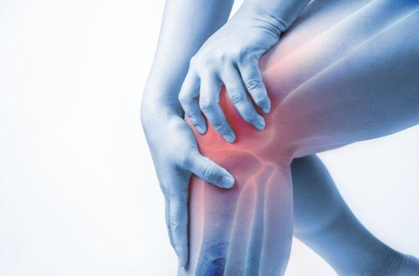

Thoái hóa khớp, viêm, tràn dịch khớp gối
1. Thoái hóa khớp gối
Thoái hóa khớp gối là một căn bệnh phức tạp có tác động không nhỏ tới cuộc sống và sinh hoạt của người bệnh. Người bị thoái hóa khớp gối cũng nên lưu ý bên cạnh chế độ ăn uống cũng cần tuân thủ một số nguyên tắc để hạn chế cơn đau, kiểm soát triệu chứng của bệnh.
1.1. Tổng quan về thoái hóa khớp gối
Thoái hóa khớp gối là căn bệnh diễn tiến âm thầm nên rất ít người phát hiện kịp thời. Dấu hiệu sớm nhất nhận biết thoái hóa khớp gối là đau mặt trước khớp gối, xuất hiện tiếng kêu lạo xạo khi gấp duỗi, nhưng nhiều người thường chủ quan bỏ qua. Đến khi bệnh tiến triển nặng sẽ gây nên các biến chứng nguy hiểm, ảnh hưởng không nhỏ đến sinh hoạt và lao động hàng ngày của người bệnh.
Thực chất, thoái hóa khớp gối là tình trạng tổn thương sụn khớp kèm phản ứng viêm và giảm thiểu lượng dịch khớp do quá trình tái tạo sụn khớp không kịp để bù vào lớp sụn đã mất theo thời gian.
Hiện nay, thoái hóa khớp gối đang có xu hướng gia tăng ở những người trẻ tuổi do lối sống thụ động, ít vận động cùng chế độ dinh dưỡng không khoa học. Nếu không điều trị sớm, bệnh có thể gây tàn phế suốt đời khi không thể đi lại được.
1.2. Dấu hiệu thoái hóa khớp gối
Bệnh nhân thoái hóa khớp gối thường bị đau mặt trước hoặc trong khớp gối Các triệu chứng thông thường của thoái hóa khớp gối bao gồm:
+ Đau mặt trước hoặc trong khớp gối, cơn đau tăng khi vận động hoặc khi chuyển tư thế từ ngồi sang đứng. Lúc đầu sẽ xuất hiện các cơn đau nhức đầu gối, lâu dần cơn đau sẽ tăng và kéo dài.
+ Khớp cứng và khó cử động sau khi ở yên một chỗ lâu. Mất linh hoạt.
+ Khớp gối có thể bị sưng to.
+ Chân bị lệch trục kiểu vòng kiềng (chân chữ O) hoặc kiểu chân chữ X, người bệnh có thể bị mất chức năng vận động.
1.3. Nguyên nhân thoái hóa khớp gối
Có nhiều nguyên nhân và yếu tố làm tăng nguy cơ thoái hóa khớp gối:
+ Do tuổi tác: Khi tuổi càng cao, quá trình tổng hợp của sụn càng bị suy giảm. Sau độ tuổi trưởng thành tế bào sụn cũng không có khả năng sinh sản và tự tái tạo.
+ Giới tính: Phụ nữ từ 55 tuổi trở lên thường có nguy cơ mắc các bệnh viêm khớp hơn nam giới. Nguyên nhân do dây chằng trước của khớp gối yếu hơn, và thói quen đi giày cao gót gây áp lực trực tiếp lên sụn tạo cơ hội thoái hóa tiến triển nhanh.
+ Thừa cân hoặc béo phì: Việc thừa cân sẽ tạo áp lực lên hai khớp gối, sụn khớp nhanh hao mòn và hỏng dần theo thời gian. Theo nghiên cứu, phụ nữ thừa cân béo phì trên tuổi 40 có khả năng bị thoái hóa khớp gối cao gấp 6 lần so với người bình thường. Với những người béo phì, chỉ cần giảm 5kg sẽ giảm nguy cơ viêm khớp và thoái hóa khớp đến một nửa.
+ Chấn thương do chơi thể thao hoặc tai nạn: Những rủi ro làm gãy xương bánh chè, đầu dưới xương đùi, giãn hoặc đứt dây chằng... đều khiến sụn bị tổn thương nghiêm trọng. Người bệnh nếu không điều trị sớm sẽ dẫn đến lệch trục khớp, gây thoái hóa từ từ.
+ Di truyền: Một số người bị thoái hóa khớp là do yếu tố di truyền.
+ Vận động quá sức: Lao động nặng hoặc chơi thể thao, tập luyện ở cường độ cao cũng dẫn đến thoái hóa khớp nhanh.
+ Không thường xuyên hoạt động thể dục: Lười tập thể dục có thể khiến các cơ bị lỏng lẻo, các khớp xương thiếu độ linh hoạt, cấu trúc cơ, xương, gân, dây chằng dễ bị sai lệch. Nếu thường xuyên tập luyện tăng sức mạnh cơ có thể giảm đến 30% nguy cơ mắc thoái hóa khớp gối.
+ Sử dụng thuốc corticoid không đúng cách: Corticoid được sử dụng nhiều trong điều trị chống dị ứng, kháng viêm, ức chế miễn dịch nhưng nếu quá lạm dụng có thể càng làm tăng mức độ thoái hóa khớp
+ Hệ miễn dịch phá hủy: Sụn khớp vốn không được nuôi dưỡng bởi mạch máu mà là bởi dịch khớp, do đó nó không được nhận biết là một phần của cơ thể. Thay vì bảo vệ, cơ thể tự sinh ra cơ chế hủy hoại sụn khớp khắp nơi, bất kể đó là sụn hư hay khỏe mạnh.
+ Biến dạng xương: Nếu trẻ sinh ra có biến dạng xương hoặc sụn thì sẽ có nguy cơ cao bị thoái hóa khớp.
+ Chế độ ăn uống, sinh hoạt không khoa học: Việc ăn uống thiếu chất khiến túi hoạt dịch tiết ra ít chất nhờn, uống rượu bia quá nhiều khiến sụn khớp bị hủy hoại nghiêm trọng.
+ Bệnh lý khác: Nhiều bệnh khác cũng có ảnh hưởng xấu đến xương khớp và sụn như béo phì, gút, tiểu đường, viêm khớp dạng thấp, hội chứng rối loạn chuyển hóa, bàn chân bẹt,...
1.4. Biến chứng nguy hiểm của thoái hóa khớp gối
Thoái hóa khớp gối mang lại những cơn đau mạn tính gây khó chịu cho người bệnh
Thoái hóa khớp gối mang lại những cơn đau mạn tính gây khó chịu cho người bệnh. Nếu không được điều trị kịp thời, các biến chứng do thoái hóa khớp gối sẽ ảnh hưởng không nhỏ đến cuộc sống và sức khỏe của người bệnh, làm suy giảm chức năng vận động:
+ Cứng khớp
+ Hạn chế vận động, đi lại khó khăn, thậm chí phải sử dụng nạng.
+ Biến dạng khớp gối, chi dưới bị cong, vẹo vào trong hoặc ra ngoài.
+ Teo cơ.
+ Chứng vôi hóa sụn khớp.
+ Bại liệt, tàn phế, phải dùng đến xe đẩy hoặc ngồi xe lăn để hỗ trợ đi lại.
Ngoài ra, bệnh cũng có thể dẫn đến các vấn đề về lo âu và trầm cảm, ảnh hưởng không nhỏ đến cuộc sống người bệnh:
+ Rối loạn giấc ngủ
+ Giảm năng suất làm việc
+ Tăng cân, ít tập thể dục dẫn đến tiểu đường, tăng huyết áp, bệnh tim mạch, gout.
1.5. Phòng tránh bệnh thoái hóa khớp gối
Nếu không chăm sóc khớp đúng cách, chính chúng ta có thể vô tình là thủ phạm đẩy nhanh tiến trình thoái hóa khớp gối. Cần phòng ngừa bệnh từ sớm với các biện pháp đơn giản:
+ Tập thể dục đều đặn và đúng cách, tập luyện các môn thể thao như bơi lội, đi bộ, đạp xe đạp, tránh những động tác quá mạnh, đột ngột.
+ Xây dựng chế độ ăn uống khoa học, giàu canxi và khoáng chất, tránh ăn nhiều chất béo, tránh dùng rượu bia và các chất kích thích thần kinh gây co cứng cơ.
+ Kiểm soát cân nặng tốt, tránh thừa cân, béo phì
+ Giới văn phòng sau 1 – 2 giờ ngồi làm việc cần nghỉ giải lao, thay đổi tư thế sau mỗi 20 phút để tránh cơ và khớp bị mỏi.
+ Xoa bóp khớp gối đều đặn mỗi ngày, vào buổi sáng và chiều, việc massage giúp cơ bắp thư giãn, lưu thông máu.
+ Kiểm tra sức khỏe định kỳ, nên chủ động tìm hiểu kiến thức về bệnh lý xương khớp.
Thoái hóa khớp gối hiện vẫn là một trong những tác nhân hàng đầu gây tàn phế. Vì vậy khi cảm thấy có dấu hiệu bất thường ở đầu gối, người bệnh cần đi gặp bác sĩ để chẩn đoán và nhận phác đồ điều trị thoái hóa khớp gối trước khi xảy ra biến chứng nghiêm trọng.
1.6. Điều trị thoái hóa khớp gối
Chế độ ăn uống có ảnh hưởng khá lớn đến quá trình cải thiện của thoái hóa khớp gối. Tuy nhiên thoái hóa khớp gối nên làm gì, thoái hóa khớp gối nên ăn gì, thoái hóa khớp gối nên kiêng gì, hãy cùng xem những gợi ý dưới đây:
Người bị thoái hóa khớp gối nên ăn gì?
+ Các loại cá nước lạnh: Cá hồi, cá thu, cá ngừ, cá trích là những thực phẩm có chứa nhiều acid béo omega-3 – một loại chất kháng viêm hiệu quả, người bệnh nên ăn ít nhất 3 bữa cá 1 tuần.
+ Nước hầm từ xương ống hay sụn sườn bò, bê cung cấp rất nhiều chonroitin và glucosamin, là những hợp chất tự nhiên cấu thành sụn. Ngoài ra, những món ăn này còn bổ sung cho cơ thể lượng canxi dồi dào, tốt cho hệ xương khớp.
+ Các loại thịt heo, thịt gia cầm được nuôi hữu cơ: Luân phiên trong khẩu phần ăn để chế độ dinh dưỡng thêm đa dạng
+ Thực vật: Các loại ngũ cốc, đậu nành, rau xanh vào bữa ăn hằng ngày là những loại thực phẩm giúp tăng cường miễn dịch, chống oxy hóa rất tốt.
+ Trái cây: Đu đủ, dứa, chanh, cam chứa nhiều men kháng viêm và vitamin C giúp kháng viêm hiệu quả cũng như tăng cường độ dẻo dai cho các khớp.
+ Các chất béo lành mạnh như bơ thực vật, dầu dừa, dầu ôliu nguyên chất, các loại hạt. Các chất có trong bơ và đậu nành có khả năng kích thích tế bào sụn sinh sưởng collagen – một thành phần protein chính trong sụn, gân, xương.
Người bị thoái hóa khớp gối nên kiêng gì để hạn chế cơn đau?
Ngoài việc thiết chế độ dinh dưỡng khoa học tốt cho khớp gối, người bệnh đừng quên tránh xa các loại thực phẩm dưới đây:
+ Thịt đỏ (thịt bò, thịt cừu, thịt lợn, thịt dê...) khi vào cơ thể tiêu hóa sẽ sản xuất ra axit. Những axit này cần một lượng lớn canxi để trung hòa. Nếu không cung cấp đầy đủ canxi, cơ thể sẽ rút canxi từ hệ xương. Như vậy đối với người bệnh, quá trình thoái hóa khớp gối diễn ra với tốc độ nhanh chóng.
+ Thực phẩm chế biến sẵn chứa chất béo công nghiệp: Đồ chiên rán, nướng, khoai tây...là các loại thực phẩm làm gia tăng tình trạng viêm khớp, đặc biệt là gây tăng cân (trọng lượng cơ thể càng tăng càng gây áp lực cho sụn khớp, bề mặt sụn khớp bị hư tổn nhanh hơn).
+ Thực phẩm chứa nhiều đường và carbohydrate (bánh quy, bánh ngọt, chè...) làm cản trở việc hấp thu canxi, gây tổn thương các protein trong cơ thể, gây viêm khiến hệ cơ xương khớp yếu đi.
+ Ăn mặn sẽ khiến xương giòn và dễ gãy, đồng thời làm tăng tình trạng viêm, dẫn đến đau đớn hơn.
+ Rượu, bia, cà phê và các loại nước ngọt có ga gây hại cho những người bị viêm khớp, thoái hóa khớp gối hoặc bệnh gout. Nếu tiêu thụ chúng trong một thời gian dài càng khiến triệu chứng đau thêm trầm trọng, việc điều trị cũng trở nên phức tạp.
Các lưu ý giúp kiểm soát triệu chứng thoái hóa khớp gối
+ Giảm cân nếu bạn thừa cân: Khi tăng cân, áp lực đè lên khớp gối càng lớn càng khiến bộ phận này trở nên thoái hóa. Ngoài ra, cơ thể của những người béo phì chứa một lượng mỡ khá lớn, có các chất gây viêm xương khớp, làm tăng quá trình thoái hóa sụn khớp.
+ Giảm cân nếu bạn thừa cân: Khi tăng cân, áp lực đè lên khớp gối càng lớn càng khiến bộ phận này trở nên thoái hóa. Ngoài ra, cơ thể của những người béo phì chứa một lượng mỡ khá lớn, có các chất gây viêm xương khớp, làm tăng quá trình thoái hóa sụn khớp
+ Dùng thực phẩm chức năng bổ sung: Glucosamine (giúp kích thích tế bào sụn, hỗ trợ ức chế các enzyme phá hủy sụn khớp, tăng sản sinh chất nhầy ở dịch khớp), Chondroitin (ức chế enzyme gây thoái hóa sụn), MSM (hỗ trợ giảm đau, kháng viêm, kết hợp cùng Glucosamine tạo nên collagen, giúp duy trì tính đàn hồi của khớp).
Với nhiều năm kinh nghiệm trong việc thăm khám và điều trị các bệnh lý cơ xương khớp, hiện nay Phòng khám chuyên khoa Hồng Ngọc đã trở thành một trong các phòng khám uy tín, có khả năng thăm khám, sàng lọc và điều trị nhiều bệnh lý chuyên sâu. Do đó, nếu có triệu chứng của đau khớp gối thì bạn có thể đến Phòng khám chuyên khoa Hồng Ngọc để thăm khám, chẩn đoán và điều trị giúp phục hồi sức khỏe theo phác đồ điều trị cụ thể.
Để được tư vấn trực tiếp, Quý Khách vui lòng bấm số 0345.164.999 ( Hotline Phòng khám)